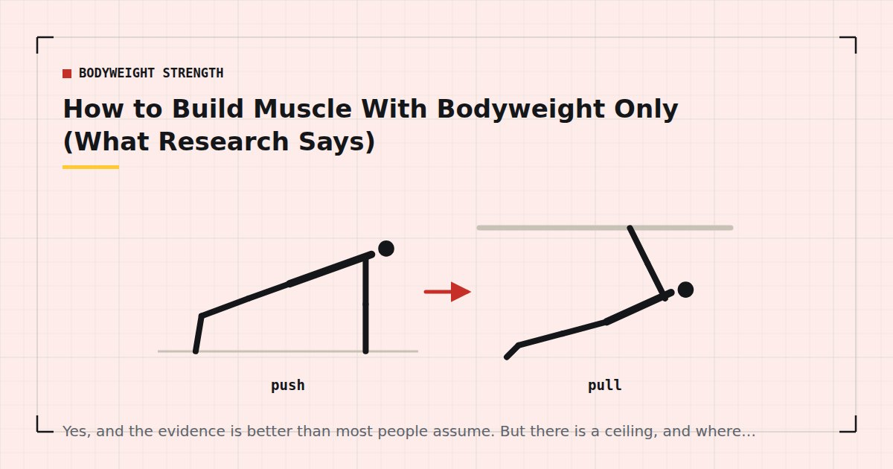

Bodyweight Strength
How to Build Muscle With Bodyweight Only (What Research Says)
Yes, and the evidence is better than most people assume. But there is a ceiling, and where it sits depends on four things most home trainees never manipulate.

This question gets answered in two unhelpful ways: an enthusiastic yes that ignores the constraints, or a dismissive no from people who assume bodyweight training means twenty push-ups.
The accurate answer is yes, with conditions, and up to a point that is further away than most people ever reach.
The short answer
You can build a substantial amount of muscle with bodyweight training alone, particularly in the upper body. You will find it harder to build the legs past a certain point, and you will eventually reach a ceiling that a small amount of equipment would raise considerably.
For the overwhelming majority of people training at home — who are not close to their genetic potential and who mostly want to be stronger and look better — that ceiling is not the binding constraint. Consistency is.
What actually drives muscle growth
Three things are generally accepted as the primary drivers: mechanical tension on the muscle, sufficient training volume, and progressive overload over time.
Note that heavy weight is not on that list. Heavy weight is a very convenient way to produce mechanical tension, and it makes progressive overload trivially easy to arrange. But it is a means rather than the mechanism itself, and this distinction is the whole reason bodyweight training works at all.
What the evidence shows
Light loads work if effort is high
The most directly relevant finding. A systematic review and meta-analysis comparing low-load and high-load resistance training found comparable hypertrophy between them when sets were taken close to failure.1 Strength gains favoured heavier loads, but muscle growth was similar.
This is the central result for bodyweight training. Your load is fixed at some fraction of your bodyweight, which is light in strength-training terms — and the evidence says that need not prevent hypertrophy, provided the sets are hard.
Volume matters, with a dose-response relationship
A meta-analysis of weekly resistance training volume found more weekly sets produced more hypertrophy, up to a point.2 This applies regardless of where the resistance comes from, so accumulating enough weekly sets is as important at home as anywhere.
You do not need to hit absolute failure
Research comparing sets taken to failure with sets stopped short suggests you can stop a few repetitions early without sacrificing much growth, while saving considerable recovery.3 Useful, because taking every bodyweight set to true failure is both exhausting and time-consuming.
Protein matters more when the stimulus is smaller
Meta-analytic evidence shows protein intake supports muscle mass gains alongside resistance training.4 This is not specific to bodyweight training, but it is the variable most home trainees ignore while worrying about programme details. The practical numbers are in how much protein you need for home workouts.
The four variables you control
With load fixed, four levers remain, and most home trainees never deliberately manipulate any of them.
1. Proximity to failure. The most important and most neglected. Most people stop sets at discomfort, which is typically five or more repetitions short of failure. Getting within one to three changes the stimulus dramatically at no cost in time or equipment.
2. Exercise difficulty. Incline push-ups to floor to decline to archer. Two-legged squats to split squats to pistols. This is how you achieve progressive overload without adding weight, and it has a long runway — the ladders are in bodyweight exercise progressions.
3. Tempo and range. A four-second descent with a pause at the bottom makes any movement substantially harder. Deficit push-ups increase range at the stretched position. Both are free.
4. Weekly volume. More hard sets per muscle group per week, up to roughly the high teens. This usually means more sessions rather than longer ones — see how many days a week you should work out.
Most people who conclude that bodyweight training does not build muscle have never taken a set close to failure or progressed past a standard push-up.
Where the ceiling is
Three honest limitations.
Legs are the hardest problem. Upper-body pushing and pulling scale well to very difficult single-limb variations. Legs are strong relative to bodyweight, so even a pistol squat is a modest load for a well-trained person. This is the clearest gap, and it is why single-leg work matters so much — see training legs at home without equipment.
Maximal strength requires heavy loads. Very low repetition training with near-maximal loads is not available with bodyweight, so absolute strength will lag behind what the same person could achieve with a barbell.
Advanced progressions become skill-limited. A one-arm push-up requires trunk and stabiliser strength that may become the limiting factor before the chest does. At that stage, adding external load to an easier variation trains the target muscle better.
For most people, that ceiling sits one to three years of consistent training away. It is worth knowing about and not worth worrying about in year one.
Getting past it
A very small amount of equipment extends the runway substantially. A weighted vest or a loaded rucksack lets you keep using variations you have already mastered while adding load — see weighted vest training and DIY home gym equipment. Resistance bands solve the pulling problem. A single adjustable dumbbell transforms leg training.
None of that contradicts the case for bodyweight training. It just means that if you train consistently for long enough to hit the ceiling, buying one or two things is a reasonable response — and the priority order is in the minimalist home gym guide.
Where to go next
For the complete methodology, see the complete guide to bodyweight strength training at home. For the progression ladders, see bodyweight exercise progressions.
Frequently asked questions
Can you build muscle with bodyweight exercises only?
Yes. A meta-analysis comparing low-load and high-load resistance training found comparable muscle growth when sets were taken close to failure. The load being light does not prevent hypertrophy, provided the sets are genuinely hard.
Is bodyweight training as good as weights for building muscle?
For muscle size, close to it, provided sets approach failure and volume is adequate. For maximal strength, weights are clearly better, because very low repetition training with near-maximal loads is not available with bodyweight.
Why am I not building muscle from bodyweight training?
Most commonly because sets are stopped well short of failure, the exercise variations have not progressed in months, or weekly volume is too low. Protein intake is the fourth common culprit and the one most people ignore.
What is the ceiling for bodyweight training?
Legs are the clearest limitation, since they are strong relative to bodyweight even in advanced variations. Maximal strength also lags what a barbell would allow. For most people that ceiling is one to three years of consistent training away.
Do you need to train to failure with bodyweight exercises?
Not to absolute failure. Evidence suggests stopping a few repetitions short preserves most of the growth stimulus while saving considerable recovery. Getting within one to three repetitions of failure on working sets is a reasonable target.
How long does it take to build muscle with bodyweight training?
Measurable strength change within three to four weeks, and visible muscle change typically from three months onward in a beginner. Progress slows substantially after the first year, which is when the four levers of effort, difficulty, tempo and volume matter most.
Sources and further reading
- Schoenfeld BJ, Grgic J, Ogborn D, Krieger JW. “Strength and Hypertrophy Adaptations Between Low- vs. High-Load Resistance Training: A Systematic Review and Meta-analysis.” Journal of Strength and Conditioning Research, 2017;31(12):3508–3523. PubMed.
- Schoenfeld BJ, Ogborn D, Krieger JW. “Dose-response relationship between weekly resistance training volume and increases in muscle mass: A systematic review and meta-analysis.” Journal of Sports Sciences, 2017;35(11):1073–1082. PubMed.
- Vieira AF, Umpierre D, Teodoro JL, et al. “Effects of Resistance Training Performed to Failure or Not to Failure on Muscle Strength, Hypertrophy, and Power Output: A Systematic Review With Meta-Analysis.” Journal of Strength and Conditioning Research, 2021. PubMed.
- Morton RW, Murphy KT, McKellar SR, et al. “A systematic review, meta-analysis and meta-regression of the effect of protein supplementation on resistance training-induced gains in muscle mass and strength in healthy adults.” British Journal of Sports Medicine, 2018;52(6):376–384. PubMed.
- Currier BS, Mcleod JC, Banfield L, et al. “Resistance training prescription for muscle strength and hypertrophy in healthy adults: a systematic review and Bayesian network meta-analysis.” British Journal of Sports Medicine, 2023. PubMed.
Comments
Comments are not enabled yet. Add a hosted comment embed (Disqus, Commento, Giscus) inside this container when you are ready.